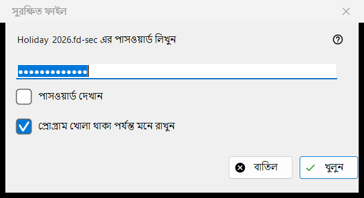
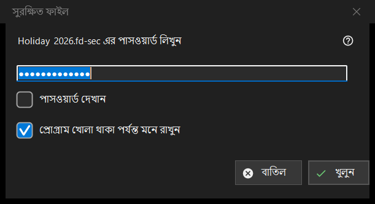

সুরক্ষিত ফাইল
এটি কীসের জন্য
একটি সুরক্ষিত কন্টেইনারের, অর্থাৎ .fd-sec ফাইলের, পাসওয়ার্ড চায় যখন সেটি পর্দায় আসে। এটি খোলে যখন আপনি Enter চাপেন বা তালাবদ্ধ ফাইলে ক্লিক করেন, এবং নিজে থেকেই যখন আপনি এমন ফাইলে থামেন; স্লাইডশো সুরক্ষিত ফাইল বাদ দেয় এবং সেগুলো গোনে। বিষয়বস্তু মেমরি থেকে দেখানো হয়: ডিক্রিপ্ট করা কিছুই ডিস্কে লেখা হয় না। শুধু আধুনিক ভিউয়ারে।


এই ক্রমে
- পাসওয়ার্ড টাইপ করুন; সেটি ঢাকা থাকে।
- অন্য কন্টেইনারও একই পাসওয়ার্ড ব্যবহার করলে প্রোগ্রাম খোলা থাকা পর্যন্ত মনে রাখুন বিকল্পে টিক দিন।
- খুলুন (Enter) চাপুন।
- বাতিল (Esc) ফাইলকে তালাবদ্ধ রাখে।
উপাদানসমূহ
পাসওয়ার্ড
ইঙ্গিতে ফাইলের নাম থাকে। পাসওয়ার্ড দেখান বিকল্পটি শুরুতে বন্ধ থাকে। পাসওয়ার্ড ঠিক যেমন টাইপ করা হয়েছে তেমনই ধরা হয় এবং মূল থ্রেডের বাইরে যাচাই হয়, তাই ধীর কী-ডেরিভেশন চলার সময় ভিউয়ার সাড়া দেয়; এটি কখনও রেজিস্ট্রিতে, ফাইলে বা Windows স্টোরে লেখা হয় না।
প্রোগ্রাম খোলা থাকা পর্যন্ত মনে রাখুন
ডিফল্টভাবে টিক দেওয়া। এটি প্রোগ্রাম বন্ধ হওয়া পর্যন্ত পাসওয়ার্ড মেমরিতে রাখে, এবং কেবল তখনই যখন তা দিয়ে সত্যিই একটি কন্টেইনার খুলেছে; তারপর ভিউয়ার পরের কন্টেইনারগুলোয় চুপচাপ সেটি চেষ্টা করে এবং শুধু যখন তা মেলে না তখনই জিজ্ঞেস করে।
প্রত্যাখ্যান ও খালি পাসওয়ার্ড
ব্যর্থ চেষ্টার পর উইন্ডো এই লাইনসহ ফিরে আসে: খোলেনি: পাসওয়ার্ড ভুল হতে পারে, ফাইলটি কখনও কন্টেইনার না-ও হতে পারে, কিংবা এটি বদলে দেওয়া হয়েছে। এই ক্ষেত্রগুলো ইচ্ছা করেই একই রকম দেখায়: ভুল কী আর বদলে যাওয়া বাইট আলাদা করা যায় না। নষ্ট বা অসমর্থিত কন্টেইনার নিজস্ব বার্তা পায় এবং পাসওয়ার্ড উইন্ডো ডাকে না। খালি পাসওয়ার্ড গ্রহণ করা হয়: Enter-এর প্রথম চাপ একটি বার্তা দেখায় এবং দ্বিতীয়টি ফাইল খোলে; বার্তাটি হলো: খালি পাসওয়ার্ড কোনো সুরক্ষা নয়: এমন ফাইল কেবল সাধারণ দৃষ্টি থেকে আড়াল থাকে। খুলতে আবার চাপুন।
বাতিল
বাতিল, Esc ও বন্ধ করার বোতাম একই পথ এবং কিছু বদলায় না। ফাইলে এই লেখা দেখা যায়: পাসওয়ার্ড প্রয়োজন - Enter চাপুন বা ফাইলে ক্লিক করুন, আর যতক্ষণ সেই ফোল্ডার খোলা থাকে ভিউয়ার সেটির জন্য আর জিজ্ঞেস করে না। Enter বা ফাইলে ক্লিক আবার জিজ্ঞেস করে।